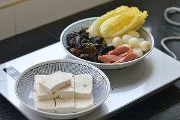
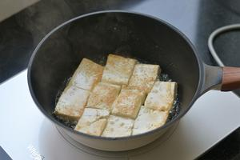
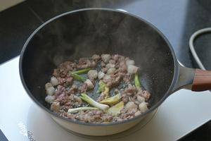
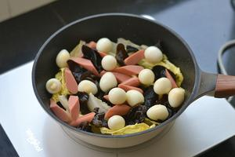
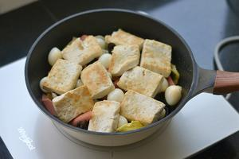
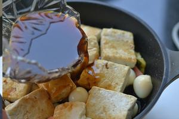
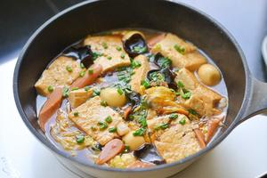

2022-04-11
This Chinese Cabbage and Tofu Hot Pot is a very simple and delicious dish that is perfect for a quick and satisfying meal. The tofu absorbs the rich sauce, and the cabbage becomes tender and flavorful. It's so delicious that you might accidentally eat an extra bowl of rice!
Chinese cuisine often emphasizes the balance of flavors and textures. This dish is a great example of how simple ingredients can be transformed into a delicious and comforting meal. The combination of tofu, cabbage, and other ingredients creates a harmonious blend of flavors that is both satisfying and healthy.
| Ingredient | Quantity |
|---|---|
| Pork belly | 200g |
| Tofu | 200g |
| Napa cabbage | 100g |
| Dried black wood ear | 150g |
| Quail eggs | 200g |
| Ham sausage | 2 sticks |
| Light soy sauce | 2 tablespoons |
| Dark soy sauce | 1 tablespoon |
| Oyster sauce | 1 tablespoon |
| Salt | a pinch |
| White sugar | 0.5 tablespoon |
| White pepper | a pinch |
| Warm water | 300g |
Note: Dried black wood ear have a unique texture and are often used in stir-fries and hot pots. You can find them in Asian grocery stores or online. But Dried black wood ear should be soaked in water for at least 30 minutes before use. Make sure to remove any hard or chewy parts. Improper handling can lead to food poisoning
Prepare all the ingredients. Wash the vegetables and cut them into appropriate sizes.
Cut the tofu into cubes and pan-fry them until both sides are golden brown. Set aside.
Boil the quail eggs, peel them, and set aside.
Mince the pork belly and stir-fry it in a pan until it changes color. Add a pinch of salt and some ginger and scallions to enhance the flavor.
Place the napa cabbage on top of the minced pork, followed by the wood ear, ham sausage, and quail eggs.
Place the pan-fried tofu on top.
In a bowl, mix 2 tablespoons of light soy sauce, 1 tablespoon of dark soy sauce, 1 tablespoon of oyster sauce, a pinch of salt, white sugar, and white pepper. Add about 300g of warm water and stir well to make the sauce. Pour the sauce into the pan.
Simmer the dish over medium-low heat for about 8 minutes, keeping the internal temperature is higher than 70°C.
After removing the pan from the heat, sprinkle some chopped green onions or any other grinded spices on top for garnish.
This dish can be adapted in various ways to create new and exciting flavors. Here are a few ideas: